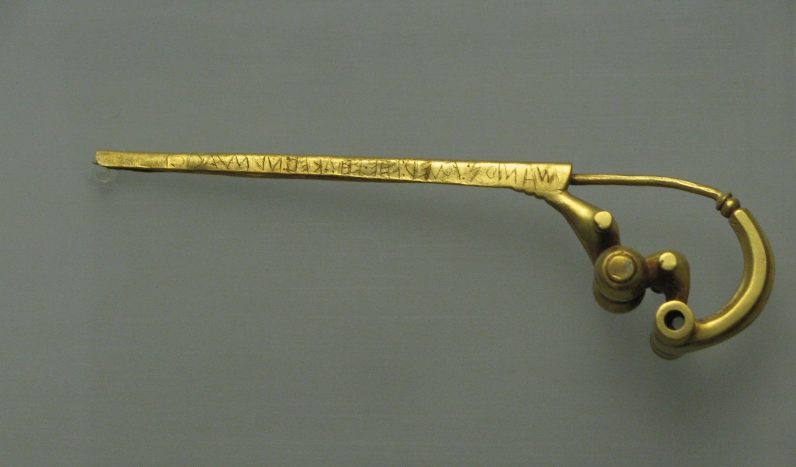
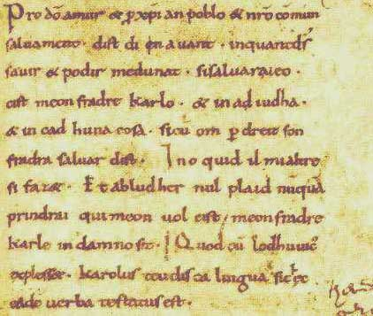
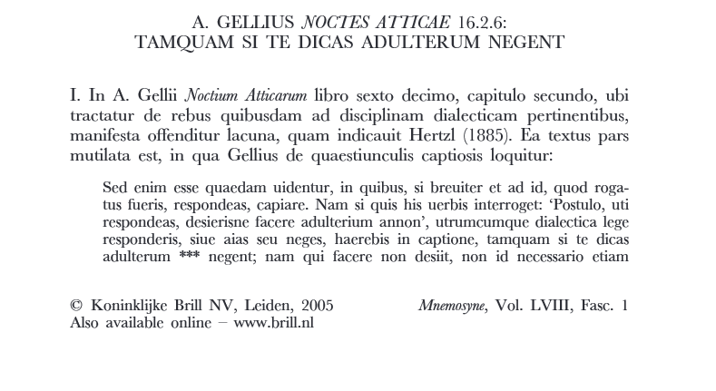

Латински језик има дугу историју и њим су се користили многи народи. Добио је назив по племену Латина, који су се први користили њиме. Латински језик је индоевропски језик, што значи да је сродан већини савремених и древних језика Европе, Индије, Ирана и Средње Азије. Латински је настао на тлу Италије, која је била насељена од стране различитих племена: Венета на североистоку, Лигура на северозападу и Етрураца који су били између њих. Најближи суседи Римљана на северу су били Умбри, а на југу Оски. На крајњем североистоку су били Илири, а на крајњем југу и југозападу, у приобаљу „Апенинске чизме“, и на источној и јужној обали Сицилије биле су грчке насеобине које су се називале Великом Грчком (Magna Graecia1). Због овако разноликог суседства, развио се под утицајем различитих култура, од којих су најбитније грчка и етрурска култура. Многе од тих утицаја можемо да приметимо и данас: антена, арена и сателит су речи које су дошле из етрурског језика.
Историја латинског језика је јако сложена и зато ју је најбоље објаснити хронолошки. Најчешћа подела историје латинског језика, по којој је написан и овај рад, је следећа:
Слика 1: Римско царство у доба највећег распростирања
Старолатински је језик који припада породици индоевропских језика и први је познати стадијум у развоју латинског језика. Коришћен је у периоду до 75. године пре нове ере у Средишњој Италији. Најранији натпис на старолатинском језику је пронађен на брошу названом „Praeneste fibula“ – „Брош Палестрине“2. Натпис је гласио „MANIOS MED FHEFHAKED NVMASIOI“, односно на класичном латинском „MANIVS ME FECIT NVMERIO“ – „Маниј ме је направио за Нумера“. Поред овога, пронађени су и други наптиси на старолатинском, попут:
Старолатински је користио писмо преузето од Етрураца. Од овог писма је касније настала латиница, најчешће коришћено писмо на свету.
Слика 2: Praeneste fibula
Класични латински језик представља облик латинског језика који су писци касне Римске републике и Римског царства сматрали за стандард. Римски политичари су свој говор сматрали бољим од говора обичног народа и зато су га називали првокласним односно classicus4. Од оснивања Римске републике, Римљани су причали прелазним обликом између старолатинског и класичног латинског језика. На овом језику су написане прве историје Рима, прве филозофске расправе и политички списи, између осталог. Онај језик који можемо назвати латинским се први пут појављује око 100.године п. н. е. када је стандардизован језик виших класа римског друштва. Ово је био језик мислилаца, поета, филозофа и њим се писало у златном добу латинске књижевности. Овај период је трајао од касне републике до раних година Римског царства. Како се Римско царство ширило, тако се ширило и говорно подручје латинског језика, постајући језик који се причао у целом Средоземљу. Ово је олакшало трговцима, мислиоцима, генералима и владарима, чак и онима који нису били под влашћу Рима, да се укључе у културне токове Средоземља.
У класичној латинској књижевности идзвајају се два главна периода:
Златно доба латинске књижевностије период који је трајао од око 70. г.п.н.е. до 18. г.н.е, током којег је латински језик, као књижевни језик, доведен до савршенства и током којег су написана ремек-дела класичне римске књижевности. Подељено је на два дела: Цицероново доба, које је трајало од 70. г.п.н.е. до 43. г.п.н.е. и у којем је доминирало говорништво, и Августово доба, које је трајало од 43. г.п.н.е. до 18. г.п.н.е. и у којем до врхунца долази поезија. Неки од великих писцаца овог доба су:
Сребрно доба класичне латинске књижевности је трајало од 18. г.н.е. до 133. г.н.е.и по књижевним достигнућима је одмах иза златног доба. Услед повећаног утицаја провинција у овом периоду, римска књижевност се све више удаљава од стандарних класичних облика. Најдоминантније су биле сатире и филозофска дела. Неки од битнијих писаца овог доба су:
Слика 3: Римски говорник
Слика 4: Новчић из доба Августа
Каснолатински језик је назив за писани латински језик позне антике. Књижевни латински прима све више особина говорног латинског језика, али је, зависно од писца, углавном сличан класичном латинском. Настао је кад су се варварски плаћеници, који нису говорили латински, у све већем броју насељавали у пограничним областима царства. Ово је захтевало нови стандардни језик који би омогућио лакше споразумевање нижих и виших класа друштва. Каснолатински језик је настао под утицајима класичног латинског, хришћанског латинског и говорног латинског.
Говорни или вулгарни латински језик означава низ нестандардизованих дијалеката латинског језика који су се користили на простору Римског царства у позној антици. Модерни романски језици су настали од вулгарног латинског. Језик којим је причао обичан народ Римског царства се разликовао од класичног латинског језика којим су се служиле више класе Рима. И пошто овај говор није био стандардизован, како се римска држава ширила, тако се и латински све више мењао. Пад Западног римског цартва и мешање странаца који су слабо причали латински са бившим римским грађанима су убрзали ове промене и до почетка 8. века, говор се толико променио, да народ више уопште није разумео црквене текстове писане на класичном латинском језику, па се 8. век може узети као датум изумирања латинског језика. У источном делу Римског царства је, до краја 7. века, латински био замењен грчким језиком, који се причао тамо још пре оснивања Рима.
Слика 5: Фотографија „Заклетве из Стразбура“, најстаријег текста на старофранцуском језику
Средњовековни латински је облик латинског језика у католичком делу Европе у Средњем веку. Био је главни писани језик, језик учених, цркве, науке, књижевности, законодавства и администрације. Развој романских језика из вулгарног латинског није много утицао на развој средњовековног латинског језика, али ипак је било одређенихпромена у синтакси и речнику. Средњовековни латински је био под утицајем грчког и хебрејског језика преко превода Библије. Разне речи везане за хришћанство су дошле, непосредно или као преведенице, из грчког језика. Такође је било и доста утицаја језика Германа који су освајали делове Римског царства. Није постојао један стандард средњовековног латинског језика, па је сваки писац уносио елементе свог матерњег језика у латински језик којим су писали. Ово је посебно дошло до изражаја од дванаестог века, након чега је језик почео да прима све више утицаја: Документа из касног Средњег века која су писали говорници француског језика су имала доста сличности средњофранцуском језику у граматици и лексици, а документа која су писали Немци показују сличности немачком и тако даље. На пример, уместо да стављају глагол на крај реченице, како се радило у класичном латинском, пратили су праксу својих матерњих језика. Неке од промена су биле:
Дела писана средњовековним латинским обухватају:
Слика 6: Пример средњовековног рукописа на лаинском језику
Новолатински језик или нововековни латински језик обухвата облик латинског језика који се причао у периоду од око 1375. до касног 19. века. Развио се у ренесансној Италији и углавном је био коришћен у академским круговима. Од ренесансе па све до краја 18. века био је lingua franca17 образованог дела Европе и омогућио је ширење научних идеја по целом континенту.
Почетком у хуманистичким идејама ренесансе, средњовековни латински, који је био коришћен у католичкој цркви, започиње свој преображај од религијског до световног језика. Поновним откривањем класичних дела античких писаца писаних на латинском језику започињу напори ренесансних писаца да прочисте латинску граматику и стил писања. Један од првих писаца који је писао световна дела на латинском је био Петрарка, а кодификацију новог стила су извршили Лоренцо Вала и Еразмус између осталих. Протестантске реформе, које су се бориле за употребу народних језика у црвкеним службама, помогле су да се латински прошири као световни језик. Ово је убрзано ширењем штампарија по Европи, које су омогућиле јефтино умножавање књига у поређењу са ручним преписивањем. Временом, латински је постао услов за упис на већину универзитета Европе, као и главни језик дипломатије.
Иако је крајем 17. века бивао потиснут од стране новијих језика попут немачког, француског и енглеског, и даље је био једини језик који би било могуће користити на целом континенту за споразумевање са странцима.
Новолатински није био јединствен језик, већ скуп повезаних дијалеката насталих по целој Европи. Према томе, није постојао јединствен изговор новолатинског језика и сваки центар учења латинског (Италија, Француска, Немачка...) је имао свој посебан изговор. Ови дијалекти могу бити груписани у две породице на основу заједничких особина:
Латински језик је по први пут и овом периоду коришћен у штампаним делима, што је довело до одређених промена у правопису
За разлику од класичног латинског, у новолатинском језику постоје различита слова за гласове /i/ и /j/ и гласове /u/ и /v/. У почетку је слово „V“ коришћено само на почетку речи и за сугласник /v/ и за самогласник /u/, док се на осталим местима користило слово „U“, на пример: „vt“ касније „ut“, „nouus“ касније „novus“.
Слово „ј“ се користило уместо слова „i“ када је означавало сугласник. Иако се овослово писало као наше слово „ј“, имало је различите изговоре у различитим деловима Европе („ј“, „џ“, „ж“, „х“).
До 18. века се, осим на крају речи, уместо знака „s“ писао знак „ſ“ (слично развученом слову с).
Диграфи „ae“ и „oe“ су се писали само на почетку речи док су се уместо њих на осталим положајима користили знакови „æ“ и „œ“: Cæsar уместо Caesar.
Савремени латински језик обухвата облик латинског језика који је коришћен од краја 19. века до данас. Постоје различити врсте савременог латинског језика попут језика коришћеног у таксономији или језика који користи католичка црква.
Чест пример употребе савременог латинског језика је у фразама или слоганима. Такође постоје и две радио-станице у Немачкој које емитују програм на латинском језику. Неколико универзитетских часописа редовно објављује чланке на латинском.
Од почетка 19. века, па до сада, постојало је неколико покрета оживљавања латинског језика као живог заједничког језика. Ово су правдали тиме што је латински био језик на којем је подигнута западна цивилизавија и да према томе припада свима подједнако, за разлику од савремених језика, попут енглеског.
Слика 7: Почетак чланка написаног на латинском језику 2005. године
Латински језик је имао огроман утицај на историју човечанства. На латинском језику су написана нека од највећих дела класичне књижевнсти. Услед ширења Римске републике, самим тим и ширњем латинског језика, све више људи је учило да прича латински језик. Ово је омогућило лакшу трговину, администрацију и ширење идеја. То је један од разлога због којих је и римска цивилизација преживљавала вековима. Након пада Западног римског царства, латински језик је почео свој развој до савремених романских језика. Иако је латински брзо губио говорнике, није губио на важности. Опстао је као језик дипломатије и цркве. Монаси су, учећи да пишу, преписивали античке текстове и тако их очували од уништења. У скоро целој Европи је било могуће наћи неког ко је причао овим језиком. Доживљава препород са ренесансом, када почиње да се користи као језик науке. Био је један од услова уписа сваког универзитета у Европи и самим тим је већина учених људи течно причала латински. Ово је омогућило ширење нових идеја по Европи и самим тим је убрзало научни напредак. Али ни ово није трајало дуго, и већ крајем 19. века латински поново пада у заборав.
Иако се латинским језиком данас углавном служе само аматери и професори латинског језика, овај језик је имао јако велики утицај на развој човечанства.
Слика 8: Романски језици у Европи
Слика 9: Распрострањеност романских језика на свету